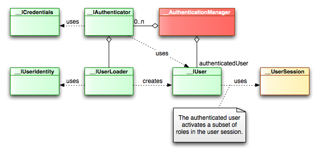

<table cellpadding="10" cellspacing="0" width="100%" border="0"><tr><td valign="top">
<div><a name=""></a><h1>Authentication in Lion</h1>
  <div class="ref-purpose">Validating user credentials</div>
 <div class="ref-synopsis"></div>
<h2>Table of Contents</h2>
<ul>

<a href="../Security/tutorial_Authentication.pkg.html#intro">Introduction</a><br />

<a href="../Security/tutorial_Authentication.pkg.html#authentication_process">Authentication Process</a><br />

<a href="../Security/tutorial_Authentication.pkg.html#configuring_authenticators">Configuring the authentication</a><br />

&nbsp;&nbsp;&nbsp;<a href="../Security/tutorial_Authentication.pkg.html#configuring_authenticators.loading_users">Loading users</a><br />

<a href="../Security/tutorial_Authentication.pkg.html#anonymous_user">The Anonymous user</a><br />
</ul>

 <p></p>
 <span><a name="intro"></a><h2>Introduction</h2><p><strong>Authentication</strong> is the practice of checking that users are who they say they are. For example, motorists identify themselves to police by presenting a driver's license. Police compare the photo and description on the driver's license with the motorist to authenticate identity. All forms of authentication are based on something you know, something you have, or something you are.</p>
  <p>In Lion we have the <a href="../Security/__AuthenticationManager.html">__AuthenticationManager</a> class to perform all the tasks regarding the authentication. This class exposes two main methods for authenticating: <a href="../Security/__AuthenticationManager.html#methodlogon">__AuthenticationManager::logon()</a> and <a href="../Security/__AuthenticationManager.html#methodlogout">__AuthenticationManager::logout()</a>.</p>
  <p><a href="../Security/__AuthenticationManager.html#methodlogon">__AuthenticationManager::logon()</a> allows to perform a logon, it is, all the tasks regarding the authentication.<br />
  At the same time, the <a href="../Security/__AuthenticationManager.html">__AuthenticationManager</a> has a set of authenticators (classes implementing the <a href="../Security/__IAuthenticator.html">__IAuthenticator</a>). To perform the logon, it delegates the authentication on each <a href="../Security/__IAuthenticator.html">__IAuthenticator</a> instance until the user is successfully authenticated.<br />
  Once it occurs, the user instance is stored in the <a href="../Security/__AuthenticationManager.html">__AuthenticationManager</a>. It also activate some roles in the <a href="../Security/__UserSession.html">__UserSession</a>.</p>
  <p><a href="../Security/__AuthenticationManager.html#methodlogout">__AuthenticationManager::logout()</a> just unset the authenticated user from <a href="../Security/__AuthenticationManager.html">__AuthenticationManager</a>. Also unset the active roles from the <a href="../Security/__UserSession.html">__UserSession</a>.</p></span>
 <span><a name="authentication_process"></a><h2>Authentication Process</h2><p>An user claiming to be authenticated, need to present 2 things: An user's identity and a credential:</p>
  <ul><li><strong>User identity</strong> is basically all the information that drives to identify an user.<br />
    i.e. The most typical user identity in a web application is the <strong>login</strong> or <strong>username</strong>. It also often used the <strong>email</strong> as user identity.</li>
    <li><strong>Credentials</strong> is all the information that help to bear out that the user is who he say he is.<br />
    i.e. The most typical user credential in a web application is the <strong>password</strong>, but it could be a <strong>digital sign</strong>, a <strong>smart card</strong>, ...</li></ul>
  <p>So, the user identity is a class implementing the <a href="../Security/__IUserIdentity.html">__IUserIdentity</a> while the credentials is a class implementing the <a href="../Security/__ICredentials.html">__ICredentials</a>.</p>
  <p>Once the user has an user identity and a credential, he is able to call to the <a href="../Security/__AuthenticationManager.html">__AuthenticationManager</a> in order to perform the logon<br />
  The <a href="../Security/__AuthenticationManager.html">__AuthenticationManager</a> is not the one who will perform the authentication, but delegates in a set of classes implementing the <a href="../Security/__IAuthenticator.html">__IAuthenticator</a>.<br />
  The authentication process will finish once an authenticator has accept the authentication, it is, has check that the user is the one who he say he is.</p>
  <p>Each <a href="../Security/__IAuthenticator.html">__IAuthenticator</a> gives both the user identity and the credential and perform the following tasks:
  <ol><li>Call to the related user loader in order to load the user that corresponds with the given credentials</li>
    <li>Once the user is loaded, the authenticator check that the provided credentials are the same that the loaded user has.</li>
    <li>If the credential checking has success, the authenticator returns the user instance reference, otherwise it returns a null.</li></ol></p>
  <p>Once the first authenticator has return an user, the <a href="../Security/__AuthenticationManager.html">__AuthenticationManager</a> stores the user as authenticated. This user can be retrieved whenever we want by calling to the <a href="../Security/__AuthenticationManager.html#methodgetAuthenticatedUser">__AuthenticationManager::getAuthenticatedUser()</a> method.<br />
  In the other hand, the <a href="../Security/__AuthenticationManager.html">__AuthenticationManager</a> delegates on the authenticated user in order to activate roles in the <a href="../Security/__UserSession.html">__UserSession</a> instance. Remember that just the active roles will be the one used for authorization tasks.</p>
  <p>Last step is to inform to the caller if the authentication has success. Simple: the <a href="../Security/__AuthenticationManager.html#methodlogon">__AuthenticationManager::logon()</a> method is a boolean method, it is: true if the user has been authenticated.</p>
  </span>
 <span><a name="configuring_authenticators"></a><h2>Configuring the authentication</h2><p>Authenticators can be configured declarativelly as well as the rest of the classes involved in the authentication. It can be done by modifying the <strong>app/config/context.xml</strong> file that allows to define instances and inject dependencies:</p>
  <p>i.e.
  <div class="listing"><pre><ol><li><div class="src-line"><span class="src-php">&lt;?</span><span class="src-id">xml&nbsp;version&nbsp;</span>=&nbsp;<span class="src-str">&quot;1.0&quot;&nbsp;</span><span class="src-id">standalone</span>=<span class="src-str">&quot;yes&quot;</span><span class="src-php">?&gt;</span></div></li>
<li><div class="src-line">&lt;configuration&gt;</div></li>
<li><div class="src-line">&nbsp;</div></li>
<li><div class="src-line">&nbsp;&nbsp;&lt;context-instances&gt;</div></li>
<li><div class="src-line">&nbsp;&nbsp;&nbsp;&nbsp;</div></li>
<li><div class="src-line">&nbsp;&nbsp;&nbsp;&nbsp;&lt;instance&nbsp;id=&quot;authenticationManager&quot;&nbsp;class=&quot;__AuthenticationManager&quot;&gt;</div></li>
<li><div class="src-line">&nbsp;&nbsp;&nbsp;&nbsp;&nbsp;&nbsp;&lt;property&nbsp;name=&quot;authenticators&quot;&gt;</div></li>
<li><div class="src-line">&nbsp;&nbsp;&nbsp;&nbsp;&nbsp;&nbsp;&nbsp;&nbsp;&lt;list&gt;</div></li>
<li><div class="src-line">&nbsp;&nbsp;&nbsp;&nbsp;&nbsp;&nbsp;&nbsp;&nbsp;&nbsp;&nbsp;&lt;ref&nbsp;id=&quot;authenticator&quot;/&gt;</div></li>
<li><div class="src-line">&nbsp;&nbsp;&nbsp;&nbsp;&nbsp;&nbsp;&nbsp;&nbsp;&lt;/list&gt;</div></li>
<li><div class="src-line">&nbsp;&nbsp;&nbsp;&nbsp;&nbsp;&nbsp;&lt;/property&gt;</div></li>
<li><div class="src-line">&nbsp;&nbsp;&nbsp;&nbsp;&lt;/instance&gt;</div></li>
<li><div class="src-line">&nbsp;</div></li>
<li><div class="src-line">&nbsp;&nbsp;&nbsp;&nbsp;&lt;instance&nbsp;id=&quot;authenticator&quot;&nbsp;class=&quot;__Authenticator&quot;&gt;</div></li>
<li><div class="src-line">&nbsp;&nbsp;&nbsp;&nbsp;&nbsp;&nbsp;&lt;property&nbsp;name=&quot;userLoader&quot;&gt;</div></li>
<li><div class="src-line">&nbsp;&nbsp;&nbsp;&nbsp;&nbsp;&nbsp;&nbsp;&nbsp;&lt;ref&nbsp;id=&quot;userLoader&quot;/&gt;</div></li>
<li><div class="src-line">&nbsp;&nbsp;&nbsp;&nbsp;&nbsp;&nbsp;&lt;/property&gt;</div></li>
<li><div class="src-line">&nbsp;&nbsp;&nbsp;&nbsp;&lt;/instance&gt;</div></li>
<li><div class="src-line">&nbsp;&nbsp;&nbsp;&nbsp;</div></li>
<li><div class="src-line">&nbsp;&nbsp;&nbsp;&nbsp;&lt;instance&nbsp;id=&quot;userLoader&quot;&nbsp;class=&quot;__UserLoader&quot;/&gt;</div></li>
<li><div class="src-line">&nbsp;&nbsp;&nbsp;&nbsp;</div></li>
<li><div class="src-line">&nbsp;&nbsp;&lt;/context-instances&gt;</div></li>
<li><div class="src-line">&nbsp;&nbsp;</div></li>
<li><div class="src-line">&lt;/configuration&gt;</div></li>
</ol></pre></div></p>
  <div class="messagebox floatnote metadata plainlinks"><div class="floatnoteicon"></div><br>To read more information regarding dependency injection in Lion, please see the Lion.DependencyInjection.pkg section</div>
  <p>In this example, we are defining an instance <strong>authenticationManager</strong> being from <a href="../Security/__AuthenticationManager.html">__AuthenticationManager</a> class as well as setting just one authenticator.<br />
  The authenticator is the instance <strong>authenticator</strong> being from <a href="../Security/__Authenticator.html">__Authenticator</a> class. We are also setting the user loader as a reference to the userLoader instance.<br />
  Last, we are defining the <strong>userLoader</strong> as an instance of the <a href="../Security/__UserLoader.html">__UserLoader</a> class.</p>
  <p>In this example, we are ussing classes out of the box, but it becomes pretty interesting when we can alter the configuration by adding our own implementations.</p>
  <p>The most critical class here is the one implementing the <a href="../Security/__IUserLoader.html">__IUserLoader</a>.<br />
  Why? this is the one which receives an user identity and load the corresponding user. So, it's the most sensible to be customized depending on the logic used to retrieve the user from.</p>
  <a name="configuring_authenticators.loading_users"></a><h3>Loading users</h3><p>i.e. imagine a system where users are stored in a database and identified by logins. It's simple to understand that we need to provide our own class implementing the <a href="../Security/__IUserLoader.html">__IUserLoader</a>.<br />
    In that sense, we need to create a class implementing the <a href="../Security/__IUserLoader.html">__IUserLoader</a> and configure the authentication in order to use this class.</p>
    <p>Let's see it in an example:
    <div class="listing"><pre><ol><li><div class="src-line"><span class="src-php">&lt;?php</span></div></li>
<li><div class="src-line">&nbsp;</div></li>
<li><div class="src-line"><span class="src-doc">/**</span></div></li>
<li><div class="src-line"><span class="src-doc">&nbsp;*&nbsp;Our&nbsp;custom&nbsp;user&nbsp;loader,&nbsp;just&nbsp;a&nbsp;DAO&nbsp;implementing&nbsp;the</span></div></li>
<li><div class="src-line"><span class="src-doc">&nbsp;*&nbsp;__UserLoader.</span></div></li>
<li><div class="src-line"><span class="src-doc">&nbsp;*</span></div></li>
<li><div class="src-line"><span class="src-doc">&nbsp;*/</span></div></li>
<li><div class="src-line"><span class="src-key">class&nbsp;</span><span class="src-id">UserDao&nbsp;</span><span class="src-key">implements&nbsp;</span><span class="src-id">__IUserLoader&nbsp;</span><span class="src-sym">{</span></div></li>
<li><div class="src-line">&nbsp;&nbsp;&nbsp;&nbsp;</div></li>
<li><div class="src-line">&nbsp;&nbsp;&nbsp;&nbsp;<span class="src-doc">/**</span></div></li>
<li><div class="src-line"><span class="src-doc">&nbsp;&nbsp;&nbsp;&nbsp;&nbsp;*&nbsp;This&nbsp;method&nbsp;expects&nbsp;a&nbsp;__UsernameIdentity&nbsp;to&nbsp;retrieve</span></div></li>
<li><div class="src-line"><span class="src-doc">&nbsp;&nbsp;&nbsp;&nbsp;&nbsp;*&nbsp;the&nbsp;username&nbsp;and&nbsp;call&nbsp;to&nbsp;the&nbsp;model&nbsp;to&nbsp;get&nbsp;the&nbsp;user.</span></div></li>
<li><div class="src-line"><span class="src-doc">&nbsp;&nbsp;&nbsp;&nbsp;&nbsp;*</span></div></li>
<li><div class="src-line"><span class="src-doc">&nbsp;&nbsp;&nbsp;&nbsp;&nbsp;*/</span></div></li>
<li><div class="src-line">&nbsp;&nbsp;&nbsp;&nbsp;<span class="src-key">public&nbsp;</span><span class="src-key">function&nbsp;</span><span class="src-sym">&amp;</span><span class="src-id">loadUser</span><span class="src-sym">(</span><span class="src-id">__IUserIdentity&nbsp;</span><span class="src-var">$user_identity</span><span class="src-sym">)&nbsp;</span><span class="src-sym">{</span></div></li>
<li><div class="src-line">&nbsp;&nbsp;&nbsp;&nbsp;&nbsp;&nbsp;&nbsp;&nbsp;<span class="src-var">$return_value&nbsp;</span>=&nbsp;<span class="src-id">null</span><span class="src-sym">;</span></div></li>
<li><div class="src-line">&nbsp;&nbsp;&nbsp;&nbsp;&nbsp;&nbsp;&nbsp;&nbsp;<span class="src-key">if</span><span class="src-sym">(&nbsp;</span><span class="src-var">$user_identity&nbsp;</span>instanceof&nbsp;<span class="src-id"><a href="../Security/__UsernameIdentity.html">__UsernameIdentity</a>&nbsp;</span><span class="src-sym">)&nbsp;</span><span class="src-sym">{</span></div></li>
<li><div class="src-line">&nbsp;&nbsp;&nbsp;&nbsp;&nbsp;&nbsp;&nbsp;&nbsp;&nbsp;&nbsp;&nbsp;&nbsp;<span class="src-var">$username&nbsp;</span>=&nbsp;<span class="src-var">$user_identity</span><span class="src-sym">-&gt;</span><span class="src-id">getUsername</span><span class="src-sym">(</span><span class="src-sym">)</span><span class="src-sym">;</span></div></li>
<li><div class="src-line">&nbsp;&nbsp;&nbsp;&nbsp;&nbsp;&nbsp;&nbsp;&nbsp;&nbsp;&nbsp;&nbsp;&nbsp;<span class="src-var">$return_value&nbsp;</span>=&nbsp;<span class="src-var">$this</span><span class="src-sym">-&gt;</span><span class="src-id">loadUserByUsername</span><span class="src-sym">(</span><span class="src-var">$username</span><span class="src-sym">)</span><span class="src-sym">;</span></div></li>
<li><div class="src-line">&nbsp;&nbsp;&nbsp;&nbsp;&nbsp;&nbsp;&nbsp;&nbsp;<span class="src-sym">}</span></div></li>
<li><div class="src-line">&nbsp;&nbsp;&nbsp;&nbsp;&nbsp;&nbsp;&nbsp;&nbsp;<span class="src-key">return&nbsp;</span><span class="src-var">$return_value</span><span class="src-sym">;</span></div></li>
<li><div class="src-line">&nbsp;&nbsp;&nbsp;&nbsp;<span class="src-sym">}</span></div></li>
<li><div class="src-line">&nbsp;&nbsp;&nbsp;&nbsp;</div></li>
<li><div class="src-line">&nbsp;&nbsp;&nbsp;&nbsp;<span class="src-doc">/**</span></div></li>
<li><div class="src-line"><span class="src-doc">&nbsp;&nbsp;&nbsp;&nbsp;&nbsp;*&nbsp;This&nbsp;method&nbsp;just&nbsp;returns&nbsp;the&nbsp;user&nbsp;instance&nbsp;that</span></div></li>
<li><div class="src-line"><span class="src-doc">&nbsp;&nbsp;&nbsp;&nbsp;&nbsp;*&nbsp;corresponds&nbsp;to&nbsp;the&nbsp;given&nbsp;username.</span></div></li>
<li><div class="src-line"><span class="src-doc">&nbsp;&nbsp;&nbsp;&nbsp;&nbsp;*&nbsp;</span></div></li>
<li><div class="src-line"><span class="src-doc">&nbsp;&nbsp;&nbsp;&nbsp;&nbsp;*/</span></div></li>
<li><div class="src-line">&nbsp;&nbsp;&nbsp;&nbsp;<span class="src-key">public&nbsp;</span><span class="src-key">function&nbsp;</span><span class="src-sym">&amp;</span><span class="src-id">loadUserByUsername</span><span class="src-sym">(</span><span class="src-var">$username</span><span class="src-sym">)&nbsp;</span><span class="src-sym">{</span></div></li>
<li><div class="src-line">&nbsp;&nbsp;&nbsp;&nbsp;&nbsp;&nbsp;&nbsp;&nbsp;<span class="src-comm">//get&nbsp;the&nbsp;user&nbsp;from&nbsp;the&nbsp;database</span></div></li>
<li><div class="src-line">&nbsp;&nbsp;&nbsp;&nbsp;&nbsp;&nbsp;&nbsp;&nbsp;<span class="src-var">$user&nbsp;</span>=&nbsp;<span class="src-id">UserPeer</span><span class="src-sym">::</span><span class="src-id">retrieveByPK</span><span class="src-sym">(</span><span class="src-var">$username</span><span class="src-sym">)</span><span class="src-sym">;</span></div></li>
<li><div class="src-line">&nbsp;&nbsp;&nbsp;&nbsp;&nbsp;&nbsp;&nbsp;&nbsp;<span class="src-key">return&nbsp;</span><span class="src-var">$user</span><span class="src-sym">;</span></div></li>
<li><div class="src-line">&nbsp;&nbsp;&nbsp;&nbsp;<span class="src-sym">}</span></div></li>
<li><div class="src-line">&nbsp;&nbsp;&nbsp;&nbsp;</div></li>
<li><div class="src-line"><span class="src-sym">}</span></div></li>
</ol></pre></div></p>
    <p>In this example we are implementing the <a href="../Security/__IUserLoader.html">__IUserLoader</a> by the class <strong>UserDao</strong>. This class exposes the loadUser method (implementing the one from <a href="../Security/__IUserLoader.html">__IUserLoader</a>. This method expects a <a href="../Security/__UsernameIdentity.html">__UsernameIdentity</a> instance as input argument.</p>
    <p>Once it receives a <a href="../Security/__UsernameIdentity.html">__UsernameIdentity</a>, it retrieves the username and delegates to the <strong>loadUserByUsername</strong> method.<br />
    This other method call to the database by performing a search by the primary key (the username).</p>
    <p>Last, we have to define the user class created by the user loader. i.e.:
    <div class="listing"><pre><ol><li><div class="src-line"><span class="src-php">&lt;?php</span></div></li>
<li><div class="src-line">&nbsp;</div></li>
<li><div class="src-line"><span class="src-doc">/**</span></div></li>
<li><div class="src-line"><span class="src-doc">&nbsp;*&nbsp;Our&nbsp;user&nbsp;class,&nbsp;just&nbsp;extending&nbsp;the&nbsp;__User.</span></div></li>
<li><div class="src-line"><span class="src-doc">&nbsp;*</span></div></li>
<li><div class="src-line"><span class="src-doc">&nbsp;*/</span></div></li>
<li><div class="src-line"><span class="src-key">class&nbsp;</span><span class="src-id">User&nbsp;</span><span class="src-key">extends&nbsp;</span><a href="../Security/__User.html">__User</a>&nbsp;<span class="src-sym">{</span></div></li>
<li><div class="src-line">&nbsp;</div></li>
<li><div class="src-line">&nbsp;&nbsp;&nbsp;&nbsp;<span class="src-key">public&nbsp;</span><span class="src-key">function&nbsp;</span><span class="src-id">setPassword</span><span class="src-sym">(</span><span class="src-var">$password</span><span class="src-sym">)&nbsp;</span><span class="src-sym">{</span></div></li>
<li><div class="src-line">&nbsp;&nbsp;&nbsp;&nbsp;&nbsp;&nbsp;&nbsp;&nbsp;<span class="src-var">$credentials&nbsp;</span>=&nbsp;<span class="src-key">new&nbsp;</span><span class="src-id"><a href="../Security/__PasswordCredentials.html">__PasswordCredentials</a></span><span class="src-sym">(</span><span class="src-sym">)</span><span class="src-sym">;</span></div></li>
<li><div class="src-line">&nbsp;&nbsp;&nbsp;&nbsp;&nbsp;&nbsp;&nbsp;&nbsp;<span class="src-var">$credentials</span><span class="src-sym">-&gt;</span><span class="src-id">setPassword</span><span class="src-sym">(</span><span class="src-var">$password</span><span class="src-sym">)</span><span class="src-sym">;</span></div></li>
<li><div class="src-line">&nbsp;&nbsp;&nbsp;&nbsp;&nbsp;&nbsp;&nbsp;&nbsp;<span class="src-var">$this</span><span class="src-sym">-&gt;</span><span class="src-id">setCredentials</span><span class="src-sym">(</span><span class="src-var">$credentials</span><span class="src-sym">)</span><span class="src-sym">;</span></div></li>
<li><div class="src-line">&nbsp;&nbsp;&nbsp;&nbsp;<span class="src-sym">}</span></div></li>
<li><div class="src-line">&nbsp;</div></li>
<li><div class="src-line"><span class="src-sym">}</span></div></li>
</ol></pre></div>
    In this example, we have just extends the <a href="../Security/__User.html">__User</a> class by adding the setPassword method in order to store the expected credentials once the password has been setted.<br />
    Take into account that once the user is returned to the authenticator, the authenticator will get the user's credential in order to compare with the given one, so, let your user class returns the expected credentials to be compared to.</p>
    <p>Now let's modify the <strong>app/config/context.xml</strong> in order to put our new class:
    <div class="listing"><pre><ol><li><div class="src-line"><span class="src-php">&lt;?</span><span class="src-id">xml&nbsp;version&nbsp;</span>=&nbsp;<span class="src-str">&quot;1.0&quot;&nbsp;</span><span class="src-id">standalone</span>=<span class="src-str">&quot;yes&quot;</span><span class="src-php">?&gt;</span></div></li>
<li><div class="src-line">&lt;configuration&gt;</div></li>
<li><div class="src-line">&nbsp;</div></li>
<li><div class="src-line">&nbsp;&nbsp;&lt;context-instances&gt;</div></li>
<li><div class="src-line">&nbsp;&nbsp;&nbsp;&nbsp;</div></li>
<li><div class="src-line">&nbsp;&nbsp;&nbsp;&nbsp;&lt;instance&nbsp;id=&quot;authenticationManager&quot;&nbsp;class=&quot;__AuthenticationManager&quot;&gt;</div></li>
<li><div class="src-line">&nbsp;&nbsp;&nbsp;&nbsp;&nbsp;&nbsp;&lt;property&nbsp;name=&quot;authenticators&quot;&gt;</div></li>
<li><div class="src-line">&nbsp;&nbsp;&nbsp;&nbsp;&nbsp;&nbsp;&nbsp;&nbsp;&lt;list&gt;</div></li>
<li><div class="src-line">&nbsp;&nbsp;&nbsp;&nbsp;&nbsp;&nbsp;&nbsp;&nbsp;&nbsp;&nbsp;&lt;ref&nbsp;id=&quot;authenticator&quot;/&gt;</div></li>
<li><div class="src-line">&nbsp;&nbsp;&nbsp;&nbsp;&nbsp;&nbsp;&nbsp;&nbsp;&lt;/list&gt;</div></li>
<li><div class="src-line">&nbsp;&nbsp;&nbsp;&nbsp;&nbsp;&nbsp;&lt;/property&gt;</div></li>
<li><div class="src-line">&nbsp;&nbsp;&nbsp;&nbsp;&lt;/instance&gt;</div></li>
<li><div class="src-line">&nbsp;</div></li>
<li><div class="src-line">&nbsp;&nbsp;&nbsp;&nbsp;&lt;instance&nbsp;id=&quot;authenticator&quot;&nbsp;class=&quot;__Authenticator&quot;&gt;</div></li>
<li><div class="src-line">&nbsp;&nbsp;&nbsp;&nbsp;&nbsp;&nbsp;&lt;property&nbsp;name=&quot;userLoader&quot;&gt;</div></li>
<li><div class="src-line">&nbsp;&nbsp;&nbsp;&nbsp;&nbsp;&nbsp;&nbsp;&nbsp;&lt;ref&nbsp;id=&quot;userDao&quot;/&gt;</div></li>
<li><div class="src-line">&nbsp;&nbsp;&nbsp;&nbsp;&nbsp;&nbsp;&lt;/property&gt;</div></li>
<li><div class="src-line">&nbsp;&nbsp;&nbsp;&nbsp;&lt;/instance&gt;</div></li>
<li><div class="src-line">&nbsp;&nbsp;&nbsp;&nbsp;</div></li>
<li><div class="src-line">&nbsp;&nbsp;&nbsp;&nbsp;&lt;instance&nbsp;id=&quot;userDao&quot;&nbsp;class=&quot;UserDao&quot;/&gt;</div></li>
<li><div class="src-line">&nbsp;&nbsp;&nbsp;&nbsp;</div></li>
<li><div class="src-line">&nbsp;&nbsp;&lt;/context-instances&gt;</div></li>
<li><div class="src-line">&nbsp;&nbsp;</div></li>
<li><div class="src-line">&lt;/configuration&gt;</div></li>
</ol></pre></div></p><br /></span>
 <span><a name="anonymous_user"></a><h2>The Anonymous user</h2><p>Since the user's permissions are checked taking into account just active roles stored in the <a href="../Security/__UserSession.html">__UserSession</a>, it's not necessary to support the figure of the anonymous user in most of the Lion applications.<br />
  If case there are not authenticated users in session, the <a href="../Security/__UserSession.html">__UserSession</a> won't have active roles and therefore any system resource requiring permissions won't be accessible.</p>
  <p>However, some applications require to grant some permissions to anonymous users, i.e. to embed the login form in a page just if the user has a given permission.<br />
  To cover this kind of situations, Lion supports the anonymous figure and provide 2 special classes for that purpose: The <a href="../Security/__AnonymousIdentity.html">__AnonymousIdentity</a> and the <a href="../Security/__AnonymousCredentials.html">__AnonymousCredentials</a> representing the identity and credentials for anonymous users.<br />
  It's an authenticator task to distinguish between the anonymous authentication request and the regular authentication request in order to create an anonymous user or not.</p>
  <p>Following with our previous example, let's update the UserDao class in order to support the anonymous user:
  <div class="listing"><pre><ol><li><div class="src-line"><span class="src-php">&lt;?php</span></div></li>
<li><div class="src-line">&nbsp;</div></li>
<li><div class="src-line"><span class="src-doc">/**</span></div></li>
<li><div class="src-line"><span class="src-doc">&nbsp;*&nbsp;Our&nbsp;custom&nbsp;user&nbsp;loader,&nbsp;just&nbsp;a&nbsp;DAO&nbsp;implementing&nbsp;the</span></div></li>
<li><div class="src-line"><span class="src-doc">&nbsp;*&nbsp;__UserLoader.</span></div></li>
<li><div class="src-line"><span class="src-doc">&nbsp;*</span></div></li>
<li><div class="src-line"><span class="src-doc">&nbsp;*/</span></div></li>
<li><div class="src-line"><span class="src-key">class&nbsp;</span><span class="src-id">UserDao&nbsp;</span><span class="src-key">implements&nbsp;</span><span class="src-id">__IUserLoader&nbsp;</span><span class="src-sym">{</span></div></li>
<li><div class="src-line">&nbsp;&nbsp;&nbsp;&nbsp;</div></li>
<li><div class="src-line">&nbsp;&nbsp;&nbsp;&nbsp;<span class="src-doc">/**</span></div></li>
<li><div class="src-line"><span class="src-doc">&nbsp;&nbsp;&nbsp;&nbsp;&nbsp;*&nbsp;This&nbsp;method&nbsp;expects&nbsp;a&nbsp;__UsernameIdentity&nbsp;to&nbsp;retrieve</span></div></li>
<li><div class="src-line"><span class="src-doc">&nbsp;&nbsp;&nbsp;&nbsp;&nbsp;*&nbsp;the&nbsp;username&nbsp;and&nbsp;call&nbsp;to&nbsp;the&nbsp;model&nbsp;to&nbsp;get&nbsp;the&nbsp;user.</span></div></li>
<li><div class="src-line"><span class="src-doc">&nbsp;&nbsp;&nbsp;&nbsp;&nbsp;*</span></div></li>
<li><div class="src-line"><span class="src-doc">&nbsp;&nbsp;&nbsp;&nbsp;&nbsp;*/</span></div></li>
<li><div class="src-line">&nbsp;&nbsp;&nbsp;&nbsp;<span class="src-key">public&nbsp;</span><span class="src-key">function&nbsp;</span><span class="src-sym">&amp;</span><span class="src-id">loadUser</span><span class="src-sym">(</span><span class="src-id">__IUserIdentity&nbsp;</span><span class="src-var">$user_identity</span><span class="src-sym">)&nbsp;</span><span class="src-sym">{</span></div></li>
<li><div class="src-line">&nbsp;&nbsp;&nbsp;&nbsp;&nbsp;&nbsp;&nbsp;&nbsp;<span class="src-var">$return_value&nbsp;</span>=&nbsp;<span class="src-id">null</span><span class="src-sym">;</span></div></li>
<li><div class="src-line">&nbsp;&nbsp;&nbsp;&nbsp;&nbsp;&nbsp;&nbsp;&nbsp;<span class="src-key">if</span><span class="src-sym">(&nbsp;</span><span class="src-var">$user_identity&nbsp;</span>instanceof&nbsp;<span class="src-id"><a href="../Security/__UsernameIdentity.html">__UsernameIdentity</a>&nbsp;</span><span class="src-sym">)&nbsp;</span><span class="src-sym">{</span></div></li>
<li><div class="src-line">&nbsp;&nbsp;&nbsp;&nbsp;&nbsp;&nbsp;&nbsp;&nbsp;&nbsp;&nbsp;&nbsp;&nbsp;<span class="src-var">$username&nbsp;</span>=&nbsp;<span class="src-var">$user_identity</span><span class="src-sym">-&gt;</span><span class="src-id">getUsername</span><span class="src-sym">(</span><span class="src-sym">)</span><span class="src-sym">;</span></div></li>
<li><div class="src-line">&nbsp;&nbsp;&nbsp;&nbsp;&nbsp;&nbsp;&nbsp;&nbsp;&nbsp;&nbsp;&nbsp;&nbsp;<span class="src-var">$return_value&nbsp;</span>=&nbsp;<span class="src-var">$this</span><span class="src-sym">-&gt;</span><span class="src-id">loadUserByUsername</span><span class="src-sym">(</span><span class="src-var">$username</span><span class="src-sym">)</span><span class="src-sym">;</span></div></li>
<li><div class="src-line">&nbsp;&nbsp;&nbsp;&nbsp;&nbsp;&nbsp;&nbsp;&nbsp;<span class="src-sym">}</span></div></li>
<li><div class="src-line">&nbsp;&nbsp;&nbsp;&nbsp;&nbsp;&nbsp;&nbsp;&nbsp;<span class="src-comm">//else&nbsp;if&nbsp;the&nbsp;anonymous&nbsp;identity&nbsp;is&nbsp;detected:</span></div></li>
<li><div class="src-line">&nbsp;&nbsp;&nbsp;&nbsp;&nbsp;&nbsp;&nbsp;&nbsp;<span class="src-key">else&nbsp;</span><span class="src-key">if&nbsp;</span><span class="src-sym">(&nbsp;</span><span class="src-var">$user_identity&nbsp;</span>instanceof&nbsp;<span class="src-id"><a href="../Security/__AnonymousIdentity.html">__AnonymousIdentity</a>&nbsp;</span><span class="src-sym">)&nbsp;</span><span class="src-sym">{</span></div></li>
<li><div class="src-line">&nbsp;&nbsp;&nbsp;&nbsp;&nbsp;&nbsp;&nbsp;&nbsp;&nbsp;&nbsp;&nbsp;&nbsp;<span class="src-var">$return_value&nbsp;</span>=&nbsp;<span class="src-var">$this</span><span class="src-sym">-&gt;</span><span class="src-id">loadAnonymousUser</span><span class="src-sym">(</span><span class="src-sym">)</span><span class="src-sym">;</span></div></li>
<li><div class="src-line">&nbsp;&nbsp;&nbsp;&nbsp;&nbsp;&nbsp;&nbsp;&nbsp;<span class="src-sym">}</span></div></li>
<li><div class="src-line">&nbsp;&nbsp;&nbsp;&nbsp;&nbsp;&nbsp;&nbsp;&nbsp;<span class="src-key">return&nbsp;</span><span class="src-var">$return_value</span><span class="src-sym">;</span></div></li>
<li><div class="src-line">&nbsp;&nbsp;&nbsp;&nbsp;<span class="src-sym">}</span></div></li>
<li><div class="src-line">&nbsp;&nbsp;&nbsp;&nbsp;</div></li>
<li><div class="src-line">&nbsp;&nbsp;&nbsp;&nbsp;<span class="src-doc">/**</span></div></li>
<li><div class="src-line"><span class="src-doc">&nbsp;&nbsp;&nbsp;&nbsp;&nbsp;*&nbsp;This&nbsp;method&nbsp;just&nbsp;returns&nbsp;the&nbsp;user&nbsp;instance&nbsp;that</span></div></li>
<li><div class="src-line"><span class="src-doc">&nbsp;&nbsp;&nbsp;&nbsp;&nbsp;*&nbsp;corresponds&nbsp;to&nbsp;the&nbsp;given&nbsp;username.</span></div></li>
<li><div class="src-line"><span class="src-doc">&nbsp;&nbsp;&nbsp;&nbsp;&nbsp;*&nbsp;</span></div></li>
<li><div class="src-line"><span class="src-doc">&nbsp;&nbsp;&nbsp;&nbsp;&nbsp;*/</span></div></li>
<li><div class="src-line">&nbsp;&nbsp;&nbsp;&nbsp;<span class="src-key">public&nbsp;</span><span class="src-key">function&nbsp;</span><span class="src-sym">&amp;</span><span class="src-id">loadUserByUsername</span><span class="src-sym">(</span><span class="src-var">$username</span><span class="src-sym">)&nbsp;</span><span class="src-sym">{</span></div></li>
<li><div class="src-line">&nbsp;&nbsp;&nbsp;&nbsp;&nbsp;&nbsp;&nbsp;&nbsp;<span class="src-comm">//get&nbsp;the&nbsp;user&nbsp;from&nbsp;the&nbsp;database</span></div></li>
<li><div class="src-line">&nbsp;&nbsp;&nbsp;&nbsp;&nbsp;&nbsp;&nbsp;&nbsp;<span class="src-var">$user&nbsp;</span>=&nbsp;<span class="src-id">UserPeer</span><span class="src-sym">::</span><span class="src-id">retrieveByPK</span><span class="src-sym">(</span><span class="src-var">$username</span><span class="src-sym">)</span><span class="src-sym">;</span></div></li>
<li><div class="src-line">&nbsp;&nbsp;&nbsp;&nbsp;&nbsp;&nbsp;&nbsp;&nbsp;<span class="src-key">return&nbsp;</span><span class="src-var">$user</span><span class="src-sym">;</span></div></li>
<li><div class="src-line">&nbsp;&nbsp;&nbsp;&nbsp;<span class="src-sym">}</span></div></li>
<li><div class="src-line">&nbsp;&nbsp;&nbsp;&nbsp;</div></li>
<li><div class="src-line">&nbsp;&nbsp;&nbsp;&nbsp;<span class="src-doc">/**</span></div></li>
<li><div class="src-line"><span class="src-doc">&nbsp;&nbsp;&nbsp;&nbsp;&nbsp;*&nbsp;This&nbsp;method&nbsp;creates&nbsp;an&nbsp;anonymous&nbsp;user,&nbsp;it&nbsp;is,</span></div></li>
<li><div class="src-line"><span class="src-doc">&nbsp;&nbsp;&nbsp;&nbsp;&nbsp;*&nbsp;an&nbsp;user&nbsp;with&nbsp;anonymous&nbsp;credentials.</span></div></li>
<li><div class="src-line"><span class="src-doc">&nbsp;&nbsp;&nbsp;&nbsp;&nbsp;*</span></div></li>
<li><div class="src-line"><span class="src-doc">&nbsp;&nbsp;&nbsp;&nbsp;&nbsp;*/</span></div></li>
<li><div class="src-line">&nbsp;&nbsp;&nbsp;&nbsp;<span class="src-key">public&nbsp;</span><span class="src-key">function&nbsp;</span><span class="src-sym">&amp;</span><span class="src-id">loadAnonymousUser</span><span class="src-sym">(</span><span class="src-sym">)&nbsp;</span><span class="src-sym">{</span></div></li>
<li><div class="src-line">&nbsp;&nbsp;&nbsp;&nbsp;&nbsp;&nbsp;&nbsp;&nbsp;<span class="src-var">$user&nbsp;</span>=&nbsp;<span class="src-key">new&nbsp;</span><span class="src-id">User</span><span class="src-sym">(</span><span class="src-sym">)</span><span class="src-sym">;</span></div></li>
<li><div class="src-line">&nbsp;&nbsp;&nbsp;&nbsp;&nbsp;&nbsp;&nbsp;&nbsp;<span class="src-var">$credentials&nbsp;</span>=&nbsp;<span class="src-key">new&nbsp;</span><span class="src-id"><a href="../Security/__AnonymousCredentials.html">__AnonymousCredentials</a></span><span class="src-sym">(</span><span class="src-sym">)</span><span class="src-sym">;</span></div></li>
<li><div class="src-line">&nbsp;&nbsp;&nbsp;&nbsp;&nbsp;&nbsp;&nbsp;&nbsp;<span class="src-var">$user</span><span class="src-sym">-&gt;</span><span class="src-id">setCredentials</span><span class="src-sym">(</span><span class="src-var">$credentials</span><span class="src-sym">)</span><span class="src-sym">;</span></div></li>
<li><div class="src-line">&nbsp;&nbsp;&nbsp;&nbsp;&nbsp;&nbsp;&nbsp;&nbsp;<span class="src-key">return&nbsp;</span><span class="src-var">$user</span><span class="src-sym">;</span></div></li>
<li><div class="src-line">&nbsp;&nbsp;&nbsp;&nbsp;<span class="src-sym">}</span></div></li>
<li><div class="src-line">&nbsp;&nbsp;&nbsp;&nbsp;</div></li>
<li><div class="src-line"><span class="src-sym">}</span></div></li>
</ol></pre></div></p>
  <p>The anonymous user will be claimed by authenticators if there is not any authenticated user in session. If an authenticator returns the anonymous user, the <a href="../Security/__AuthenticationManager.html">__AuthenticationManager</a> will set it as the authenticated user and also activate his roles.</p></span></div>
      </td></tr></table>